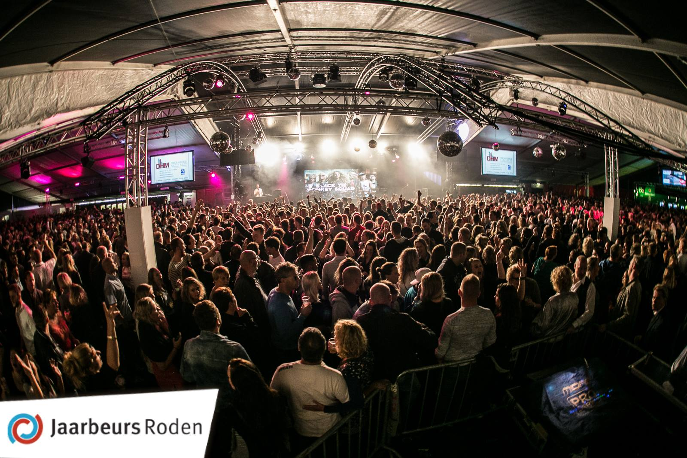

Havezate Mensinge
Mensinge is een authentiek ingerichte havezate bij Roden in de provincie Drenthe. Het huis, dat tot 1985 particulier bewoond was, is door bezoekers te bezichtigen. Bij de havezate hoort een groot bos met wandelroutes, het Mensingebos.
Doordat het huis lange tijd bewoond is geweest en de laatste decennia nagenoeg ongewijzigd is gebleven, geeft de inrichting een goed idee hoe men vroeger woonde. Het is alsof de bewoners even weg zijn. In de kelder staan nog de geweckte potten vlees.
In de havezate zijn enkele bijzondere meubelen te zien, zoals de monumentale kussenkast uit 1690, het damesbureautje uit het begin van 20e eeuw en een chaise longue in Empire-stijl. Verder is er een verzameling porselein met Chinese wijnpotten uit 1600, porselein uit de Kang Shi-periode en een geheel compleet Chien Lung-eetservies uit 1790. In het huis hangen portretten uit de 18e eeuw en landschappen van Coenraad Kymmell. De havezate is sinds 2021 opgenomen in het Museumregister Nederland.

Rodermarkt
Op de vierde dinsdag van september vindt de Rodermarkt (Noord-Drents: 'Ronermaark') plaats. Dit is van oorsprong een vee- en warenmarkt maar door het teruglopende aanbod van vee is de laatste decennia de nadruk steeds meer op de warenmarkt komen te liggen. De markt trekt vele duizenden bezoekers uit de wijde omgeving. Rondom deze markt wordt een groot aantal evenementen georganiseerd, waaronder de finale van de Miss Noord Verkiezing, een kermis, grasbaanraces voor motoren (om de Gouden Helm) op zondag en een optocht met versierde wagens op zaterdag, de Rodermarktparade. Op woensdag ten slotte vindt de kortebaandraverij plaats op de Norgerweg die voor deze gelegenheid wordt bedekt met zand, waarna er een draverij wordt gehouden.
De Rodermarktparade bestaat uit een optocht van muziekkorpsen en versierde wagens. Deze wagens worden gebouwd door wijkverenigingen en scholen in Roden en omstreken. De mooiste wagens worden beloond met prijzen. Jaarlijks komen duizenden mensen naar Roden om te genieten van de optocht, de sfeer of het nachtleven gedurende de Rodermarktperiode.